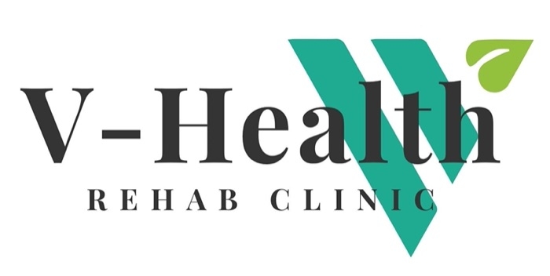

VHealth 项目时间线
V-Health Rehab Clinic · Calgary NW · 4间治疗室 · 8位治疗师 · 每天约10位客户
时间线
-
Grill Me 诊断
2026-11-12大概描述和老板做了4轮、32个问题的追问式访谈，并调研了官网、预约网站、目录和竞争对手。发现诊所不缺治疗师，也不缺口碑（260条5星评价）。真正的问题有两个：上午和周一、周二空着，而这些时段来的老人没有保险；网站给非华人"不是为我开的"的印象。目标是到2027年5月，每月预约从300次增长到600次。
下一步行动 -
Poster Design
2026-11-12大概描述为超市社区公告板设计 A4 海报，主打可以直接走保险、保险福利12月31日清零、按摩 · 整骨 · 针灸三项服务。先做10个不同角度，再围绕"年底福利过期"做了6种排版和9种本地配色。最终选定 A2：Classic 版，白色 + 青绿。二维码带追踪标签，可以统计每张海报带来的预约。
下一步行动 -
下一个事件
待定海报张贴和第1周执行完成后，会记录在这里。